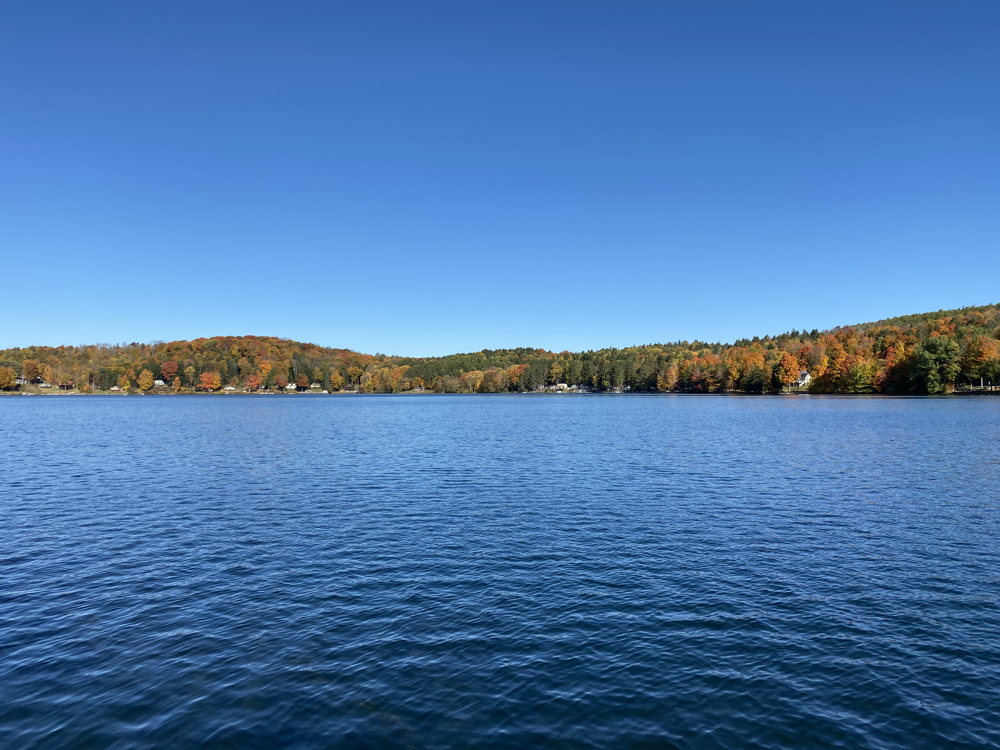

I am a recent graduate (2021) of Syracuse University in Syracuse, New York with a Bachelor of Science degree in Physics and Applied Mathematics. I will be attending Tufts University in the Fall of 2021 to pursue a Master of Science degree in Physics. My research interests are in theoretical high energy physics as well as soft condensed matter. I am also interested in computational physics and software engineering. In my free time, I enjoy reading and watching baseball.
